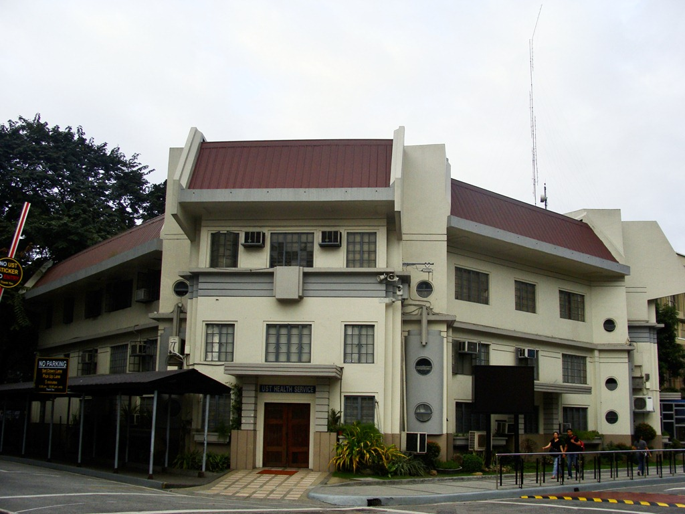

Services Offered
Preventive Health Program
- Disease Awareness Campaign
- Anti-Smoking
-
Anti-Drug Abuse
- Mandatory Drug Test for Freshmen
- Random Drug Test for 10% of the Thomasian Community Members
- Anti-Dengue (aligned with 4S DOH campaign)
- Immunization Program
- Food Safety Program (under the Crisis Management Team)
Promotive Health Programs
- "USTeps to Neocentinnial Wellness," the physical wellness program of the University launched in February 2008
-
Wellness Day Program for academic units and departments (upon request):
- Wellness Fair
- Wellness Mini-Convention
- Physical Fitness Sessions - in cooperation with IPEA
Comprehensive Thomasian Health Care Delivery
- Entry level physical examination for all freshmen and for all participants of off-campus curricular activities as per order of the Commision on Higher Education (CHEd)
- General consultation and treatment of students, faculty, support staff, and their departments
- Specialty Care in Surgery, Pulmonology, Opthalmology, Eye/Nose and Throat (ENT), Neurology & Psychiatry, Pediartics, Anesthesia, Dermatology, and Family Medicine
- Dental Care Services
- Radiological Services
- Emergency Care
- Free starter doses of prescribed medicines